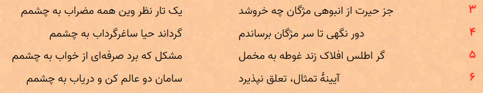
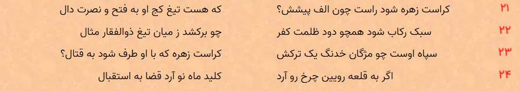

همین اول کار ببینیم پانگرام یعنی چی؟! تعریف از ویکیپدیا :حروف جمع یا پانگرام (به انگلیسی: Pangram) جملهای است که در آن از تمام حروفالفبای یک زبان خاص استفاده شود. در این جمله هر حرف باید دست کم یکبار دیده شود. پانگرام ممکن است به دلایل مختلفی مورد توجه قرار گیرد از جمله برای نمایش حروف یک فونت خاص، تمرین خطاطی یا امتحان تجهیزات خاص. به دلیل فراوانی نایکسان حروف صدادار و بی صدا در واژگان هر زبان، ساختن پانگرامهای کوتاه کاری دشوار است.افتاد؟! خب، حله!جمله زیر معروف ترین پانگرام انگلیسی است :
بعد اون رگ تپه نوردیم بالا زد گفتم آیا میتونم چیزای دیگهای هم پیدا کنم؟! اول گفتم دیتاست گنجور رو بررسی کنم ببینم در اشعار فارسی آیا چنین چیزی وجود داره یا نه؟! اول اومدم بیت ها رو تک به تک بررسی کردم. یعنی بیت اول رو انتخاب میکردم و بررسی میکردم که آیا شامل تمام حروف الفبای فارسی است یا خیر؟! دیدم نه! توی یه بیت نمیشه! بعد اومدم بیت ها رو دو تا دو تا انتخاب کردم. تمام حالت های ممکن برای انتخاب دو بیت رو بررسی کردم. یعنی چی؟ فرض کنید چهار تا بیت زیر رو داریم :
ترکیب های (1,2) و (2,3) و (3,4) رو بررسی کردم. چرا اینجوری شد؟ چون ترتیب بیت ها مهمه! شخمی شخمی که نمیشه انتخاب کرد 🙂 بازم جواب نداد. بعد اومدم ترکیب های سه تایی رو بررسی کردم. دیدم عهه بازم چیزی پیدا نشد. ظاهرا قرار نیست از این شعرا بخاری بلند بشه. دیگه گفتم سگ خور، ترکیب های چهار تایی رو بررسی میکنم که بالاخره پیدا شد! خوشحال نشید! فقط دو تا ترکیب چهار تایی پیدا شد. یکیش کار داداشم بیدل دهلوی بود، اون یکی هم کار صائب تبریزی!غزل شمارهٔ ۲۲۵۳ بیدل دهلوی :https://ganjoor.net/bidel/ghazalbi/sh2253

قصیده در مدح شاه عباس دوم :https://ganjoor.net/saeb/divan-saeb/ghasayed-sa/sh9

دیگه بدیهی است که برای ترکیب های پنج تایی به بالا قطعا اشعاری پیدا میشه که شامل همه حروف الفبای فارسی باشه. من میخواستم کوچکترین حالت ممکن رو پیدا کنم.بعد گفتم برم سراغ دیتاست ویکیپدیا فارسی. اونجا هم چیز خیلی خفنی پیدا نشد :
این ها تازه کوتاه ترین جملات بودند!
nb.neighbours()
| title | date | |
|---|---|---|
| prev | دیجیکالا در توییتر چه میکند؟! | ۱۴۰۰/۰۹ |
| next | سفر به دنیای گنجور! | ۱۴۰۰/۱۱ |